Copyright © 2008, 2023 Obeo - All rights reserved. This program and the accompanying materials are made available under the terms of the Eclipse Public License v2.0
Le
Scaffolding est une technique popularisée par le socle de développement
Ruby on Rails qui vise à produire des livrables (code, modèle, documentation) à partir des informations structurelles d’une base de données.
En l’occurrence, l’outillage de scaffolding IS Designer propose les fonctionnalités suivantes :
Cet outil permet d’initialiser un MPD à partir d’une base de données existante. Un assistant est accessible via le menu File > Import … > Database > Import Database. Voici un exemple permettant d’extraire les informations d’un schéma Oracle nommé RF :
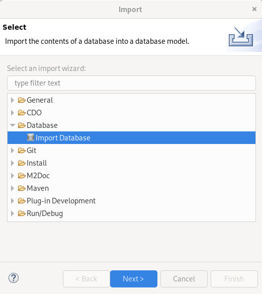
Voici un exemple permettant d’extraire les informations d’un schéma Oracle nommé RF :
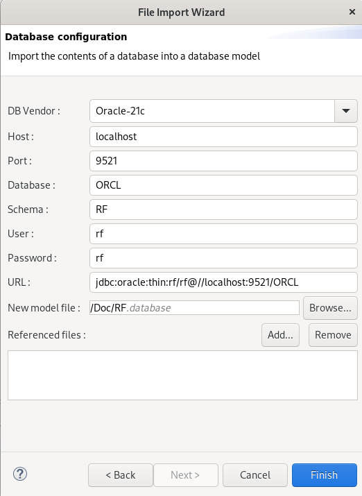
La zone Referenced files permet de référencer des MPD existants. Ce référencement est nécessaire pour importer un schéma qui comporte des clés étrangères pointant sur des tables appartenant à un autre schéma.
Le résultat obtenu est le suivant :
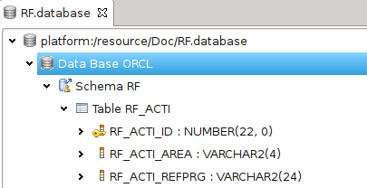
Les types de bases de données suivants sont supportés :
| Base | Version | Java |
|---|---|---|
| Oracle | 11g à 21c | 8 et 11 |
| MySQL | 5 à 8 | 8 et plus |
| MariaDB | 10.2 à 10.6 | 8, 11 et 17 |
| H2 | 1.3 à 1.4.200 | 8 |
| PostgreSQL | 9.5 à 14.3 | 8 et plus |
| SQLServer | 2008 et 2022 | 8, 11, 17 et 18 |
La rétrocompatibilité des drivers permet en théorie d’importer des schéma de base de versions antérieures à celles supportées, mais aucune garantie ne peut être donnée en ce sens.
Un assistant de création de modèles Database est accessible via le menu :
File > New > Other ... > Database Model (Catégorie IS Designer)
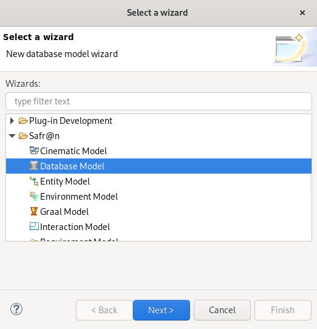
Cet assistant permet de définir
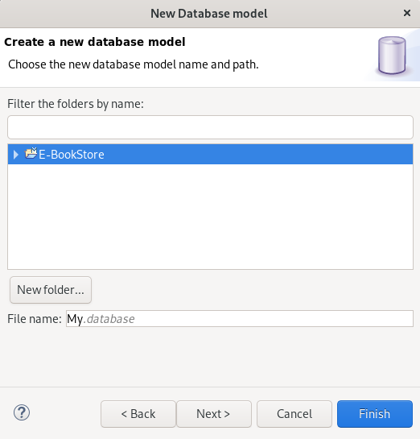
La dernière page de l’assistant permet de définir
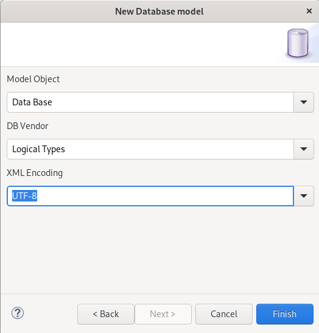
Une fois l’assistant validé, le modèle est créé.
Pour manipuler graphiquement le contenu d’une ressource
.database, celle-ci doit se trouver dans un
Modeling Project ouvert dans la vue
Model Explorer d’IS Designer.
Le point de vue
Database doit être activé (via la boite de dialogue
Viewpoints Selection disponible en action du menu contextuel sur le
Modeling project.
La création d’un diagramme Database Diagram est disponible en menu contextuel sur un élément de type Database :
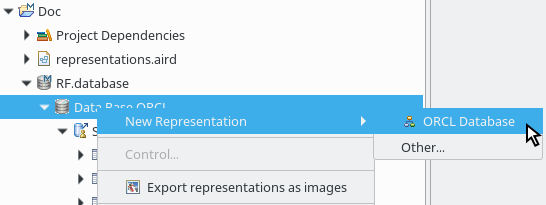
Une action similaire sur un élément de type Schema est disponible pour créer un Schema Diagram.
L’ouverture du diagramme permet de visualiser de manière graphique le contenu du fichier :
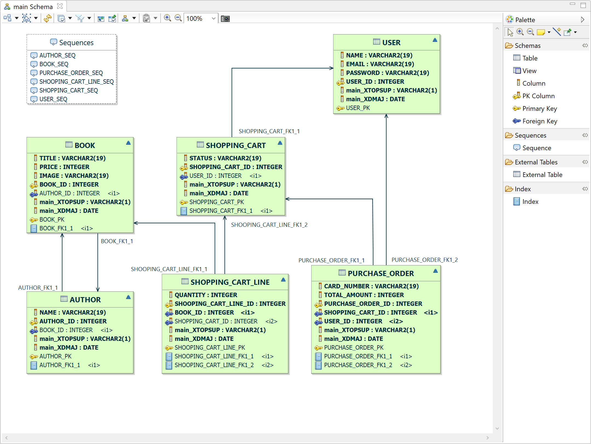
Cet éditeur propose :
Cet éditeur est «synchronisé» : il présente une vue complète du schéma ou de la base de données sur lequel il est créé. Si une table est créée par un moyen extérieur au diagramme dans le schéma ou la base de données sur lequel a été créé le diagramme, celle-ci sera automatiquement représentée sur le diagramme.
La représentation
Partial View est dédiée à visualiser un sous ensemble d’un schéma ou d’une base de données.
Cette vue est «non synchronisée» : elle est vide lorsqu’elle est créée, et elle est peuplée manuellement par drag and drop depuis la vue Model Explorer, ou bien par l’une des deux actions de menu contextuel disponibles sur les tables :
Add referenced tables et
Add referencing tables.
La couleur de fond de la vue permet de la distinguer de la vue synchronisée
Database Diagram :
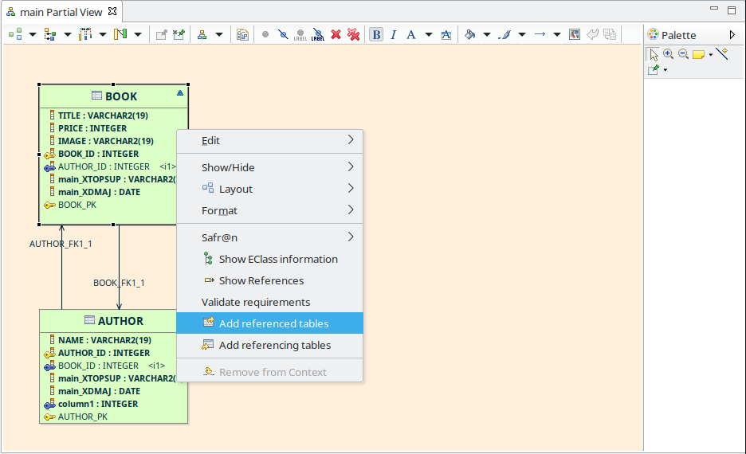
Le fonctionnement des Vues Partielles est décrit en détail dans la section ISD – Outillage environnement / Vues Partielles
L'édition de Modèle Physique de Données se fait à l’aide du modeleur présenté ci-dessus. Un MPD est caractérisé par l’utilisation d’une librairie de type spécifique à un moteur de base de données : Oracle, MySQL ou autre. Les librairies utilisées sont consultables par la propriété Used Libraries disponible sur l'élément Database :
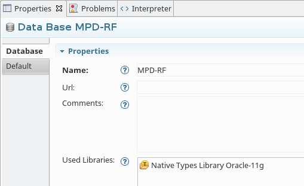
Les types de données proposées pour les colonnes des modèles physiques de données dépendent de la librairie utilisée.
Un type «ENUM» de MariaDB permet donc la définition de littéraux, et un type «VARCHAR» de PostgreSQL propose la définition de la longueur de la variable.
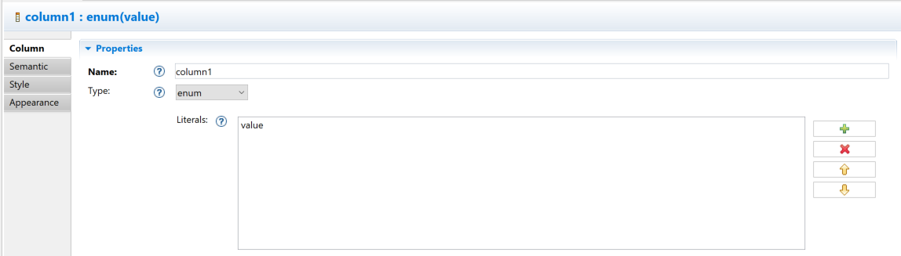
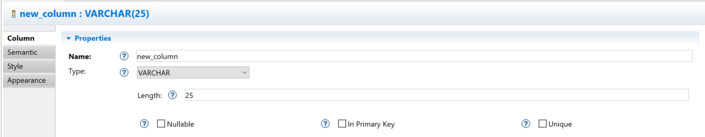
L'édition de Modèle Logique de Données se fait à l’aide du modeleur présenté ci-dessus. Un MLD est caractérisé par l’utilisation d’une librairie de types logiques indépendante de tout moteur de base de données. Les librairies utilisées sont consultables par la propriété Used Libraries disponible sur l'élément Database :
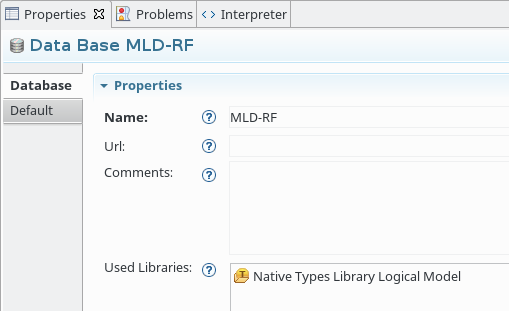
La sélection de cette librairie de types est également proposée dans l’assistant de création de modèle database :
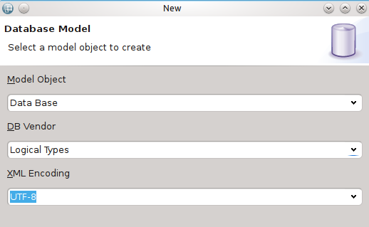
La liste des types contenus dans chacune des librairies est paramétrable.
Un assistant de création de modèles TypeLibrary est accessible via le menu :
File > New > Other ... > TypeLibrary Model (Catégorie IS Designer)
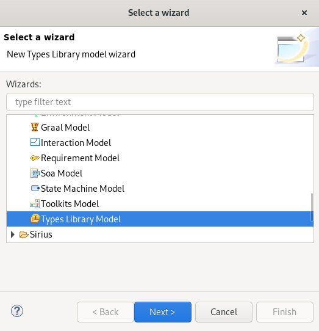
Cet assistant permet de définir
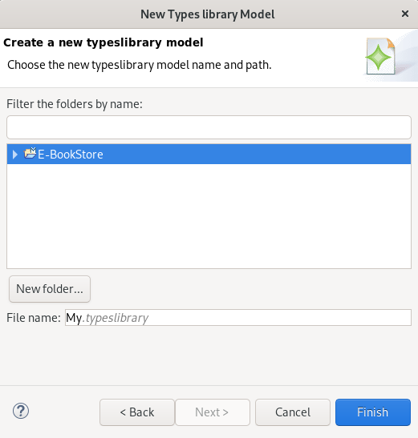
Une fois l’assistant validé, le modèle est créé.
L’outillage de comparaison permet de comparer deux versions de MPD, soit de deux fichiers stockés localement, soit d’une version locale avec une version stockée dans un référentiel de type subversion. L’outillage est basé sur EMF Compare et fournit une extension permettant d’améliorer la pertinence de la comparaison sur ce type particulier de modèle.
Pour comparer deux versions de MPD, sélectionner les deux fichiers à comparer et utiliser
Compare With > Each Other proposé dans le menu contextuel. Lors d’une comparaison de fichiers locaux (par opposition à la comparaison via l’outillage subversion) EMF Compare considère les fichiers dans un ordre alphabétique. Idéalement, le nommage à adopter doit être tel que la version la plus récente du MPD se trouve en première position tel que dans l’exemple ci-dessous :
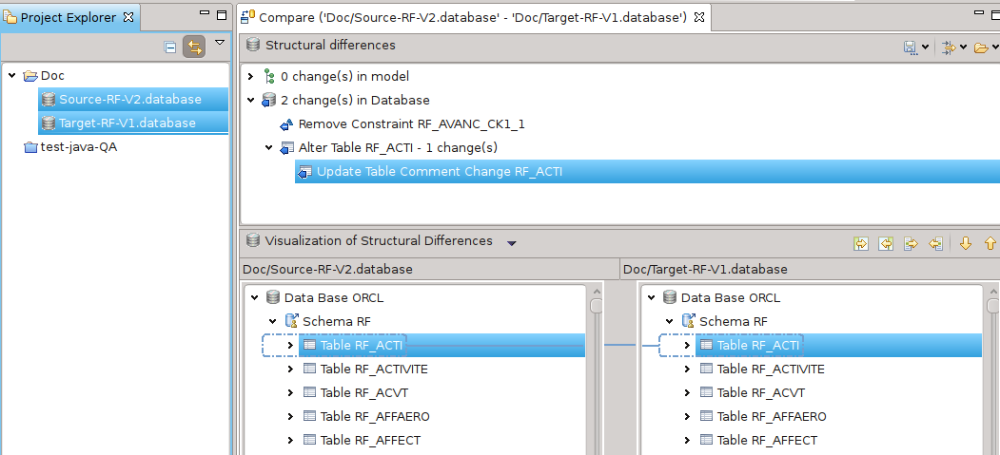
L’option de menu Compare with Each Other est également disponible dans la vue History :
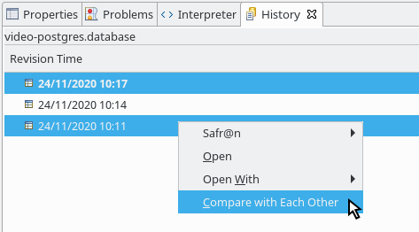
En cas de problème lors de la comparaison d’une base de données ayant des liens vers des éléments externes stockés dans des fichiers différents, il est recommandé de lire la documentation sur la résolution de modèle logique utilisée par EMF Compare:
Génération de scripts de modification
Un script SQL de modification permet de passer d’une version d’une base de données à une suivante. Pour générer un tel script, la première étape est de comparer les 2 modèles de bases de données en s’assurant que le plus récent soit en première position (cf. paragraphe précédent).
Une fois la comparaison effectuée, la génération du script SQL est rendue accessible par le bouton Generate SQL Scripts présent dans la barre d’outils. Le script généré permet la mise à jour du schéma correspondant au MPD le plus ancien :
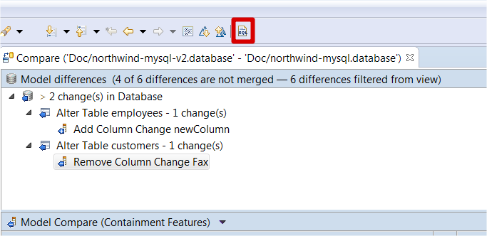
Si il n’existe pas déjà, un répertoire
sql est créé à la racine du projet pour contenir l’ensemble des scripts.
Génération de scripts de création
Un script SQL de création permet d’initialiser la structure d’une base de données. La génération d’un tel script est disponible en menu clic droit sur le modèle database, sous l’entrée IS Designer > Generate SQL Scripts :
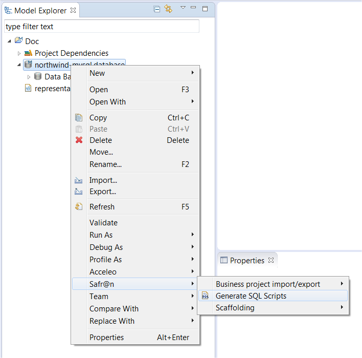
Génération de ChangeLog de modification
Un fichier ChangeLog Liquibase permet de passer d’une version d’une base de données à une suivante. Pour générer un tel fichier ChangeLog, la première étape est de comparer les 2 modèles de bases de données en s’assurant que le plus récent soit en première position (cf. paragraphe précédent).
Une fois la comparaison effectuée, la génération du fichier ChangeLog est rendue accessible par le bouton Generate Liquibase présent dans la barre d’outils. Le fichier ChangeLog généré permet la mise à jour du schéma correspondant au MPD le plus ancien :
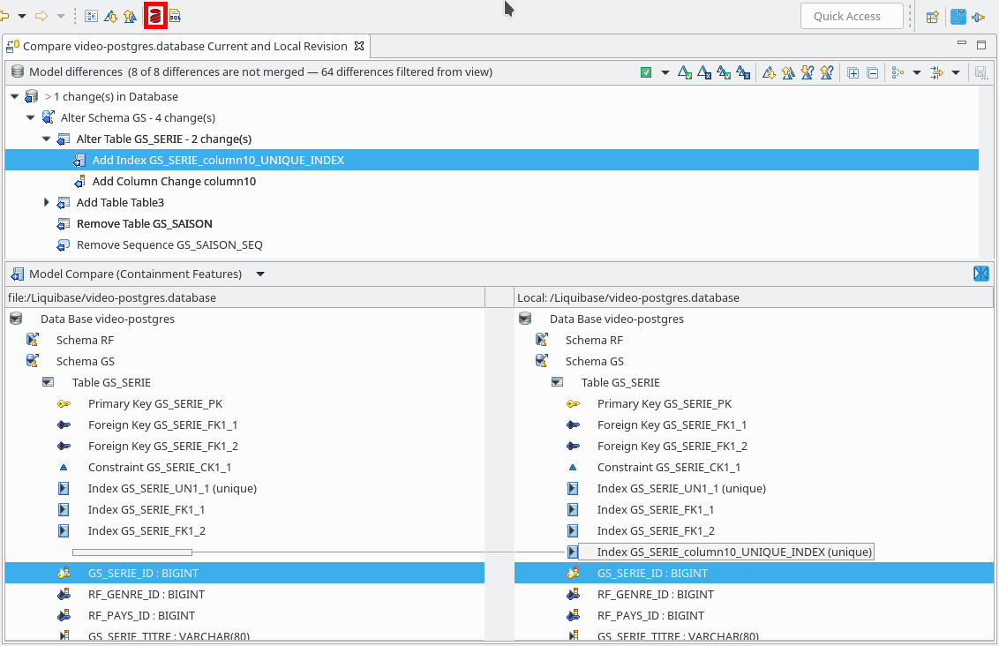
Si il n’existe pas déjà, un répertoire
liquibase est créé à la racine du projet pour contenir l’ensemble des scripts. Ce répertoire est structuré de la manière suivante :
liquibase/<Type BDD>/<Nom BDD>/<Date>/run.changelog.xml
liquibase/<Type BDD>/<Nom BDD>/run.changelog.xml
liquibase/<Type BDD>/<Nom BDD>/liquibase.properties
Les deux fichiers
run.changelog.xml générés sont identiques, l’un est généré sous un répertoire daté permettant de conserver un historique. L’autre permet d’utiliser plus facilement les commandes
Liquibase étant donné qu’il est référencé par le fichier
liquibase.properties.
Contrairement au fichier
run.changelog.xml, le fichier
liquibase.properties n’est pas écrasé à chaque génération, il est initialisé seulement si il n’existe pas.
Génération de ChangeLog de création
Un ChangeLog de création permet de générer la structure complète d’une base de données. La génération d’un tel ChangeLog est disponible en menu clic droit sur le modèle database, sous l’entrée IS Designer > Generate Liquibase Changelog :
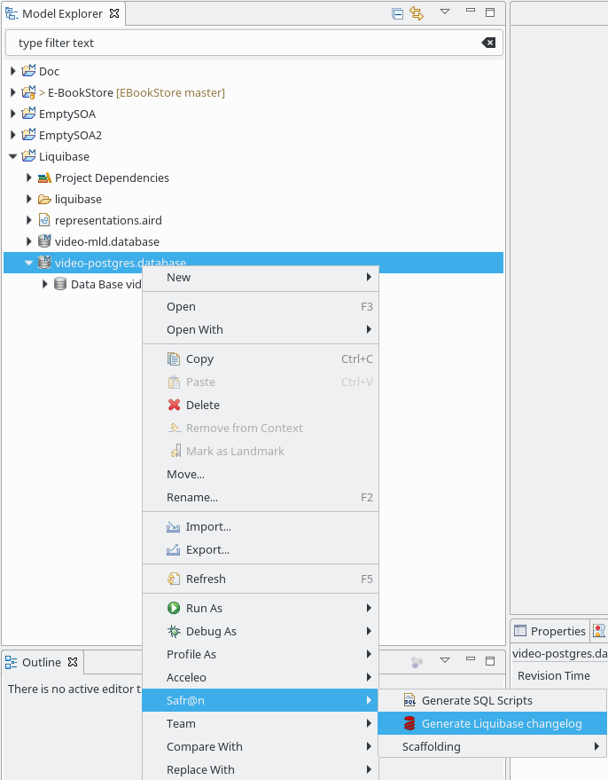
Il est possible de déployer un changelog liquibase sur une base de données directement à partir du changelog.
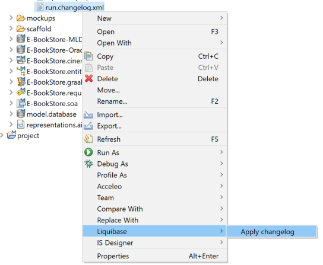
Les données de connection sont définies par défaut avec le fichier
changelog.properties, normalement créé par liquibase.
Modifier ce fichier permet de remplir définir les url et identifiants de connection, afin de déployer les changements sur une base distante.
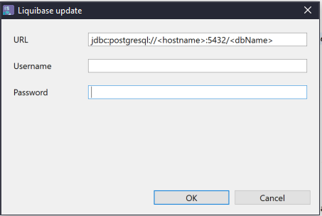
Les transformations suivantes sont proposées afin d’initialiser un modèle à partir d’un autre :
Le mode opératoire est le même pour chacune des transformations.
Pour lancer une transformation, le modèle cible doit exister. Par exemple, pour une transformation d’un MPD en MLD, la première étape est la création d’un MLD vide.
La sélection doit porter sur un objet source et un objet cible, en dépliant les modèles dans la vue Model Explorer. Si la sélection porte sur les fichiers le traitement ne pourra pas être lancé.
Pour un MPD ou un MLD, les objets source ou cible doivent être des
Data Base ou des
Schema.
Pour un modèle d’entités, les objets source ou cible doivent être des
Entities ou des
Namespace.
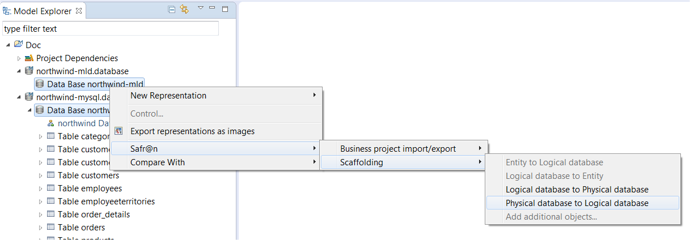!
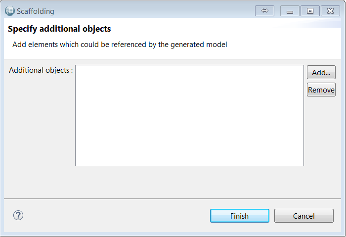
Une fois le traitement exécuté, un message de confirmation s’affiche. Un modèle contenant les informations de scaffolding est créé dans le répertoire
scaffold. Ce modèle peut être utilisé pour lancer un nouveau traitement de scaffolding sur les mêmes éléments.
La transformation peut être lancée directement depuis un modèle de scaffold par :
Les transformations disponibles dans le menu dépendent des objets source et cible utilisés par le modèle de scaffolding.
Une entrée de menu permet d’ajouter des ressources pour résoudre les dépendances externes comme lorsque l’assistant est utilisé (cf. paragraphe précédent).
A noter que lorsqu’une transformation est lancée en sélectionnant des objets source et cible pour lesquels un modèle de scaffold existe déjà, il est proposé d’utiliser le modèle existant ou d’en créer un nouveau.
Dans le cas d’une transformation d’un modèle d’entités en MLD, deux colonnes techniques sont créées pour chaque table créée.
Ces colonnes sont :
_XTOPSUP
_XDMAJ
La génération de ces colonnes peut être désactivée en ajoutant une metadata sur l’entité ou l’un des namespaces parent :
Clé : DISABLE_ADDITIONAL_FIELDS_KEY
Valeur : true
Ces deux colonnes ne seront alors pas créées pour l’entité en question, ou pour toutes les entités contenues par le namespace en question.
Les équivalences entre les types logiques et physiques, etc..., ainsi que les règles de nommage sont paramétrables.
Aussi, dans le cas où une version du modèle cible existe déjà, il est conseillé d’effectuer la transformation vers un nouveau modèle puis d’utiliser l’outillage de comparaison/fusion afin de gérer l’incrémentalité des modifications. Voici un exemple illustrant ce scénario :